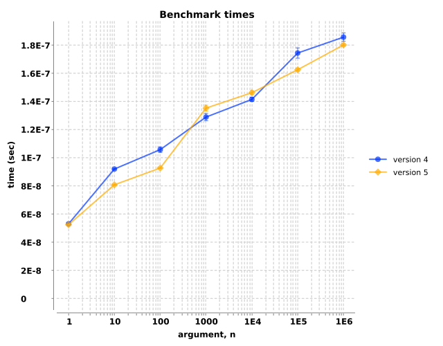
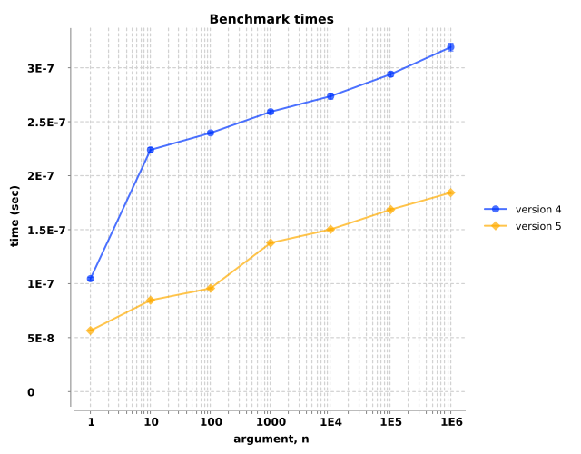
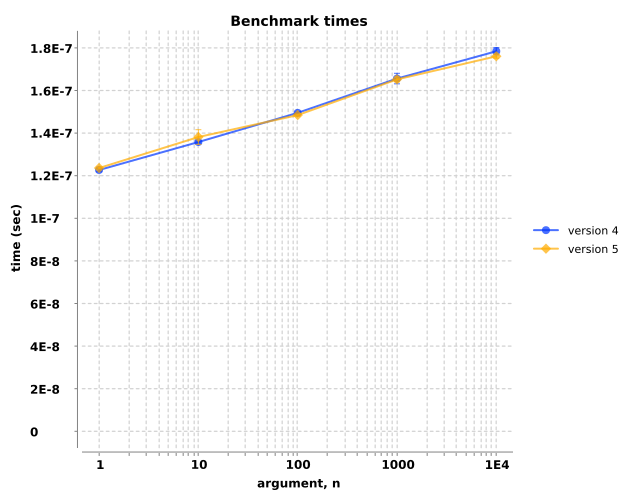
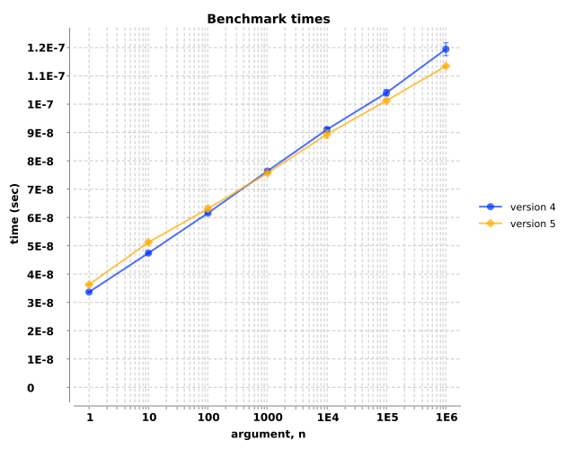
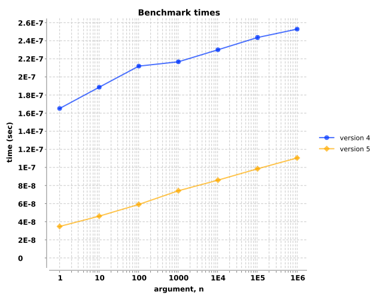
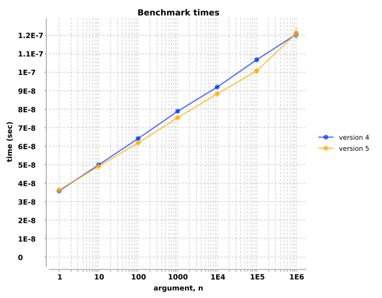
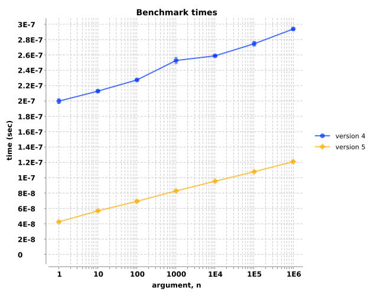

Hashmaps
Comments for hashmaps...
(fn [n] (get (map-of-n-key-vals n) (dec n)))
| arg, n | |||||||
|---|---|---|---|---|---|---|---|
| version | 1 | 10 | 100 | 1000 | 10000 | 100000 | 1000000 |
| 4 | 5.3e-08±6.0e-10 | 9.2e-08±1.8e-10 | 1.1e-07±2.0e-09 | 1.3e-07±2.6e-09 | 1.4e-07±1.4e-09 | 1.7e-07±3.6e-09 | 1.9e-07±3.0e-09 |
| 5 | 5.2e-08±3.0e-10 | 8.1e-08±3.3e-10 | 9.3e-08±3.6e-10 | 1.4e-07±2.1e-09 | 1.5e-07±1.4e-09 | 1.6e-07±9.8e-10 | 1.8e-07±7.2e-10 |
(fn [n] (get* (map-of-n-key-vals n) (dec n)))
| arg, n | |||||||
|---|---|---|---|---|---|---|---|
| version | 1 | 10 | 100 | 1000 | 10000 | 100000 | 1000000 |
| 4 | 1.0e-07±1.2e-09 | 2.2e-07±2.1e-09 | 2.4e-07±1.1e-09 | 2.6e-07±1.5e-09 | 2.7e-07±2.8e-09 | 2.9e-07±2.2e-09 | 3.2e-07±3.6e-09 |
| 5 | 5.7e-08±2.7e-10 | 8.5e-08±1.5e-09 | 9.6e-08±6.4e-10 | 1.4e-07±5.4e-10 | 1.5e-07±7.1e-10 | 1.7e-07±1.0e-09 | 1.8e-07±8.3e-10 |
Lists
This is unfair to get*: clojure.core/get always returns nil when given a list, whereas get*
actually retrieves the element.
(fn [n] (get (list-of-n-rand-ints n) (dec n)))
| arg, n | |||||
|---|---|---|---|---|---|
| version | 1 | 10 | 100 | 1000 | 10000 |
| 4 | 1.2e-07±8.0e-10 | 1.4e-07±5.0e-10 | 1.5e-07±3.5e-10 | 1.7e-07±2.5e-09 | 1.8e-07±1.7e-09 |
| 5 | 1.2e-07±4.5e-10 | 1.4e-07±3.5e-09 | 1.5e-07±5.0e-10 | 1.7e-07±1.2e-09 | 1.8e-07±9.3e-10 |
(fn [n] (get* (list-of-n-rand-ints n) (dec n)))
![Benchmark measurements for expression `(fn [n] (get* (list-of-n-rand-ints n) (dec n)))`, time versus 'n' arguments, comparing different versions.](img_get/group-1-fexpr-1.svg)
| arg, n | |||||
|---|---|---|---|---|---|
| version | 1 | 10 | 100 | 1000 | 10000 |
| 4 | 2.5e-07±8.3e-10 | 3.1e-07±2.2e-09 | 6.8e-07±1.1e-09 | 4.2e-06±2.5e-08 | 3.9e-05±2.2e-07 |
| 5 | 1.4e-07±1.9e-09 | 1.9e-07±6.0e-10 | 5.8e-07±3.2e-09 | 4.3e-06±2.4e-08 | 4.2e-05±2.6e-07 |
Sequences
Comments for sequences...
(fn [n] (get (seq-of-n-rand-ints n) (dec n)))
| arg, n | |||||||
|---|---|---|---|---|---|---|---|
| version | 1 | 10 | 100 | 1000 | 10000 | 100000 | 1000000 |
| 4 | 3.4e-08±1.8e-10 | 4.7e-08±2.4e-10 | 6.2e-08±2.7e-10 | 7.6e-08±2.7e-10 | 9.1e-08±7.5e-10 | 1.0e-07±1.1e-09 | 1.2e-07±2.3e-09 |
| 5 | 3.6e-08±1.3e-10 | 5.1e-08±5.0e-10 | 6.3e-08±1.0e-09 | 7.6e-08±4.4e-10 | 8.9e-08±1.5e-09 | 1.0e-07±5.5e-10 | 1.1e-07±3.8e-10 |
(fn [n] (get* (seq-of-n-rand-ints n) (dec n)))
| arg, n | |||||||
|---|---|---|---|---|---|---|---|
| version | 1 | 10 | 100 | 1000 | 10000 | 100000 | 1000000 |
| 4 | 1.7e-07±4.4e-10 | 1.9e-07±8.9e-10 | 2.1e-07±9.6e-10 | 2.2e-07±1.2e-09 | 2.3e-07±7.2e-10 | 2.4e-07±2.1e-09 | 2.5e-07±7.3e-10 |
| 5 | 3.5e-08±1.6e-10 | 4.6e-08±9.8e-11 | 5.9e-08±1.3e-10 | 7.4e-08±1.4e-10 | 8.6e-08±4.6e-10 | 9.9e-08±5.1e-10 | 1.1e-07±5.1e-10 |
Vectors
Comments for vectors...
(fn [n] (get (vec-of-n-rand-ints n) (dec n)))
| arg, n | |||||||
|---|---|---|---|---|---|---|---|
| version | 1 | 10 | 100 | 1000 | 10000 | 100000 | 1000000 |
| 4 | 3.6e-08±1.1e-10 | 5.0e-08±7.1e-10 | 6.4e-08±4.9e-10 | 7.9e-08±5.1e-10 | 9.2e-08±2.4e-10 | 1.1e-07±7.4e-10 | 1.2e-07±1.5e-09 |
| 5 | 3.6e-08±1.9e-10 | 4.9e-08±1.4e-10 | 6.2e-08±2.2e-10 | 7.5e-08±3.1e-10 | 8.8e-08±5.6e-10 | 1.0e-07±7.4e-10 | 1.2e-07±2.8e-09 |
(fn [n] (get* (vec-of-n-rand-ints n) (dec n)))
| arg, n | |||||||
|---|---|---|---|---|---|---|---|
| version | 1 | 10 | 100 | 1000 | 10000 | 100000 | 1000000 |
| 4 | 2.0e-07±3.1e-09 | 2.1e-07±1.4e-09 | 2.3e-07±1.2e-09 | 2.5e-07±4.1e-09 | 2.6e-07±9.3e-10 | 2.7e-07±3.0e-09 | 2.9e-07±1.2e-09 |
| 5 | 4.3e-08±2.4e-10 | 5.7e-08±3.4e-10 | 6.9e-08±7.7e-10 | 8.3e-08±2.2e-10 | 9.5e-08±5.8e-10 | 1.1e-07±2.4e-10 | 1.2e-07±8.8e-10 |